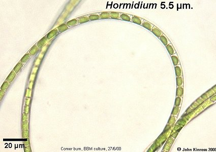

Hormidium (Klebsormidium)
|  |
This is a typical view, the sample is from a culture. The disc-shaped chloroplast is wrapped around about half of the cell periphery. The cell wall is very distinct and well-defined. |
Filaments are usually straight-sided, but sometimes the cells may become swollen and bulbous |
|
This kinked filament is quite typical: sometimes there is a disc of a clear material surrounding the 'knee', seen when the alga is growing in culture on a slide |
|
John Kinross,
School of Life Sciences,
Napier University,
Edinburgh